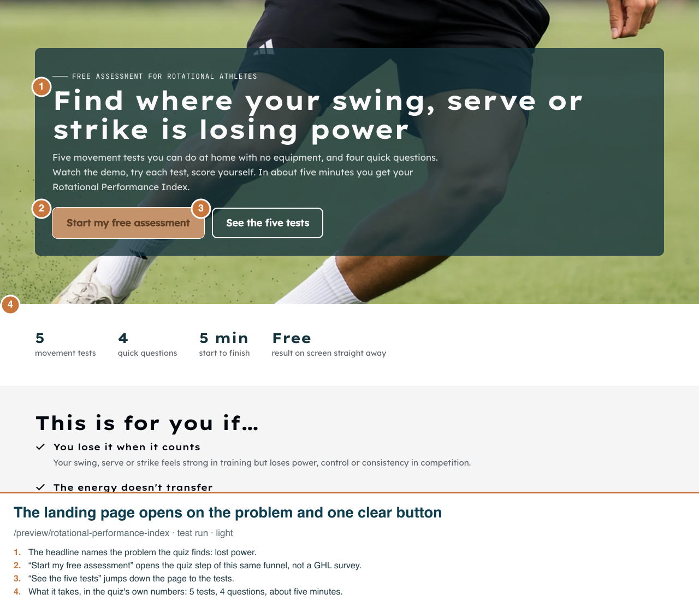
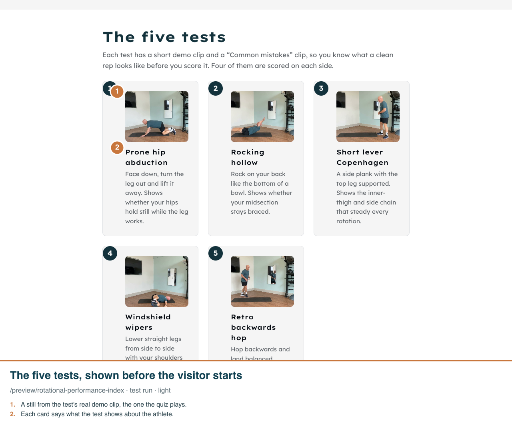
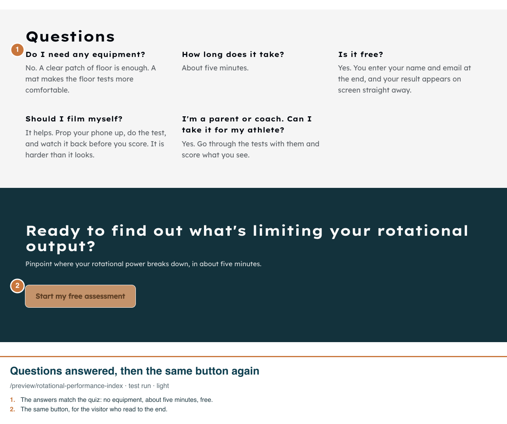
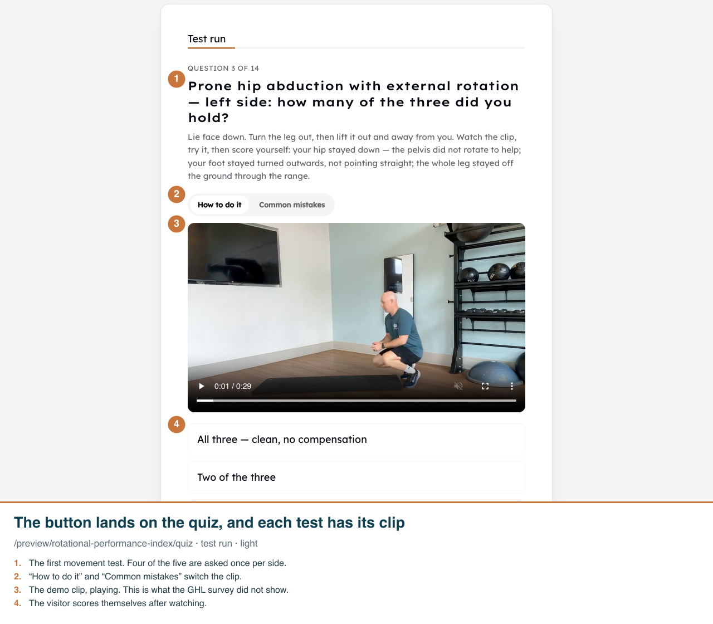
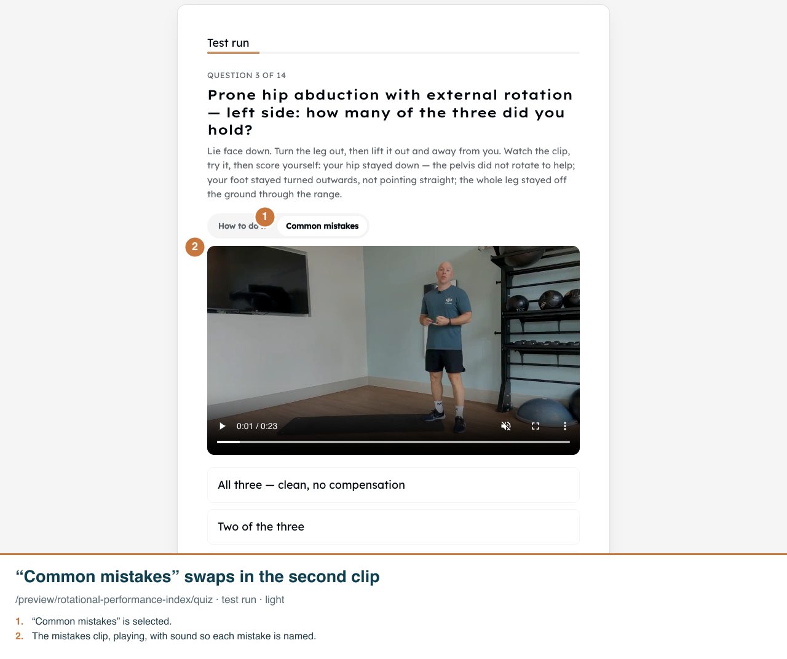
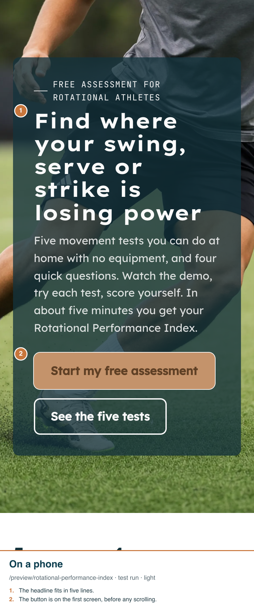

Rotational Performance Index funnel: landing page, then the video quiz
Real app, /preview/rotational-performance-index on the dev clone, as a test run (nothing saved). Desktop shots are 1280 wide; phone shots are 390 wide at 2x. Funnel pages have no dark mode.
1. The visitor lands on the page. One button starts the assessment; the strip below says what it takes.

2. Lower down, the visitor sees the five tests with a still from each test's own demo clip.

3. Near the end, short answers to the usual questions, then one more way in.

4. The visitor pressed the button, answered two questions, and reached the first movement test.

5. The visitor taps “Common mistakes” and the clip changes to show what to avoid.

6. On a phone the headline, the short pitch and the button all fit on the first screen.

7. On a phone the test, its clip and the toggle sit in one column.